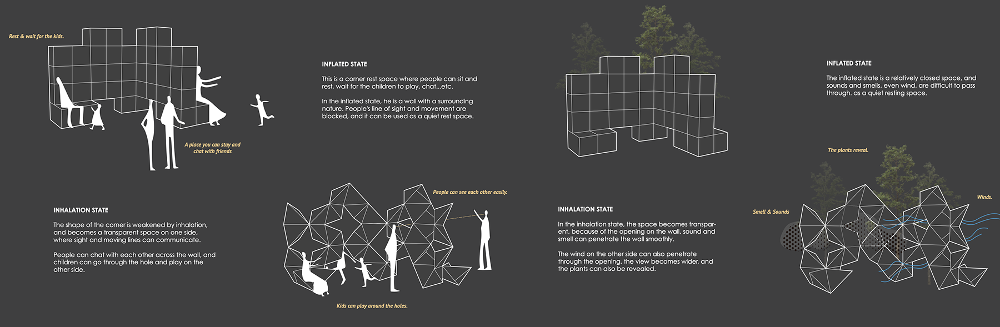

ABOUT INFLATION AND INHALATION
This design is controlled by the deformation of the opening, changing from a surface to a linear movable wall.
This design is mainly to study the shape change of the inflatable body when it is filled with gas and when it is sucked into a vacuum.
When the unit is inflated to a saturated state, the overall shape will change with the shape of the cortex, and when the gas inside the unit is withdrawn, it will randomly compress to the minimum state.
The change between inflation and inhalation is random, so we study this change process and control the shape after inhalation.
MATERIAL SELECTION
In the selection of materials, it is studied to connect the units in different ways, and whether the thickness of the skin affects the shape and appearance of the units.
In this experiment, we control the material of the first cortex, the position of the second rod, and the arrangement of the three spheres on the surface.
Finally, the No. 1 model was selected as the basic unit to be developed later.
Model No. 1 is made of PVC, the rods are placed in the film, and the ping pong balls are arranged one by one in decreasing layers
PERMUTATION
The possibility of all permutations and combinations of interconnecting elements of different numbers is investigated in both rod and edge ways.
In the research, the connection between the rod and the rod and the con- nection between the edge and the edge are used as the main connection methods, and the number of units is continuously increased to observe the connection type, so as to find the arrangement law and development direction.
EXPERIMENT
The final morphological combination we chose. When inflated: It will be a wall and create the sence of spacing. When inhaling: It will form a hole with the shape of star, can be a window or shape of line.
In order to make the large unit complete, we add rods and ropes (the left unit is to add triangular rods at the corner of the cube, and the right is to add the diagonal of the line connecting the midpoints of the sides).
It can be seen that the increase of the rope The unit can be more completely collapsed.
INFLATABLE WAY

MODEL MAKING PROCESSION
The Unit Making
To replace the area of the cube air, we stacked the ping pong balls three layers up.
Rod and balloon fixation
The rod and the PVC material are fastened together with screws and a joint device made by us.
Complete assembly
After fixing each rod and unit, assemble and stand 14 units.
RESPOND TO THE ENVIRONMENT
We will respond to the environment with our inflatable device.
Using the obvious morphological changes of inflation and inhalation and the influence of people and the environment, we will strengthen the connection of this design with people and the environment.
INTERACTION
INFLATED STATE: This is a corner rest space where people can sit and rest, wait for the children to play, chat...etc. In the inflated state, he is a wall with a surrounding nature. People's line of sight and movement are blocked, and it can be used as a quiet rest space.
INHALATION STATE: The shape of the corner is weakened by inhalation, and becomes a transparent space on one side, where sight and moving lines can communicate. People can chat with each other across the wall, and children can go through the hole and play on the other side.
APPLACATION IN THE CITY
What role can this air-filled movable device play in the city?
Because of its mobility and convenience, the structural and lightweight rods and air are easy to move, and the mobility of openings and closings can also be used in the design of people and the environment.
ABOUT
王新卉
Wang Xin Hui
A 24-year-old architecture student.
Born in 1999, lives in Taiwan. Graduated from the Department of Architecture, Tamkang University in 2023.
I’m good at researching issues, thinking about conceptual issues, and I can think and act simultaneously.I know autocad, ps, ai, sketch up, rhino and a little programming language.
CONTACT